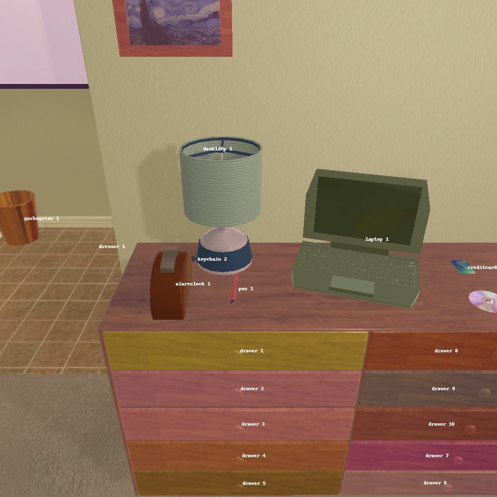

---------------------------------------------------------task: 1---------------------------------------------------------
--------------------------------------------------------------------------------------------------------------------------------------------------------------------
--------------------------------------------------------------------------------------------------------------------------------------------------------------------
Step:--------------------------------------------------------------------------4-------------------------------------------------------------------------------
----------------------------------------
VLM Prompt:
Image1:
Image2:
**Instruction**
1. Analyze the provided image to identify all visible household objects, focusing on those relevant to the task description "examine the alarmclock with the desklamp."
2. Use the analysis of the image and the task hint "The agent must find an object of the desired type, locate and turn on a light source with the desired object in-hand." to answer the question: what is the most reasonable action in the choices for the task description "examine the alarmclock with the desklamp"?
4. Decide and write the answer using the template: The answer is: (i): , where i is the real number. If there is no desired object in the image, search every place based on **Initial Observation** to find the object. And if no one is exactly correct, choose a similar answer.
**Initial Observation**
You are in the middle of a room. Looking quickly around you, you can see bed (1), dresser (1), drawer (1-10), garbagecan (1), shelf (1-7)
**Answer Choices**
(1): go to bed 1
(2): go to dresser 1
(3): go to drawer 2
(4): go to drawer 3
(5): go to drawer 4
(6): go to drawer 5
(7): go to garbagecan 1
(8): go to drawer 6
(9): go to drawer 7
(10): go to drawer 8
(11): go to drawer 9
(12): go to drawer 10
(13): go to shelf 1
(14): go to shelf 2
(15): go to shelf 3
(16): go to shelf 4
(17): go to shelf 5
(18): go to shelf 6
(19): go to shelf 7
(20): open drawer 1
(21): close drawer 1
(22): examine drawer 1
**Answer**
Let's think step by step by following the instructions.
----------------------------------------
----------------------------------------
Original Response:
First, we need to identify all visible household objects relevant to the task "examine the alarm clock with the desk lamp." In the image, we can see an alarm clock labeled "alarmclock 1" and a desk lamp labeled "desklamp 1."
Now, according to the task hint, the agent must find the alarm clock, locate and turn on a light source (the desk lamp) with the alarm clock in-hand to examine it.
None of the answer choices directly state "turn on desklamp 1" or "examine alarmclock 1 with desklamp 1." However, since the task is to examine the alarm clock with the desk lamp, the most reasonable action would be to first go to where the alarm clock is located.
The alarm clock is on the dresser labeled "dresser 1," so the most reasonable action from the choices given would be:
The answer is: (2): go to dresser 1.
----------------------------------------
----------------------------------------
>>> Refine Original VLM Response and Get Pure Action: go to dresser 1
----------------------------------------
-----------------------------------------------------------------
Running time: 11.672956705093384 seconds
Total Money: 0.36063
-----------------------------------------------------------------
-----------------------------------------------------------------
Text Observation:You arrive at loc 1. On the dresser 1, you see a laptop 1, a desklamp 1, a cd 1, a keychain 1, a creditcard 1, and a pen 1.
-----------------------------------------------------------------
UNSUCCEED